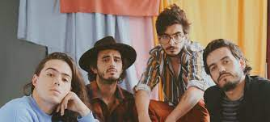
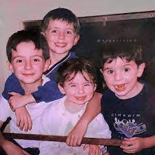

Contacto
Música
Integrantes
Inicio
Contacto
Música
Integrantes
Inicio
¿Quiénes son MORAT?
Morat es una banda colombiana de pop latino formada originalmente en Bogotá en 2011. Se dieron a conocer en 2015 con su éxito Mi nuevo vicio. Sus integrantes son Juan Pablo Isaza Piñeros, Juan Pablo Villamil Cortés, Simón Vargas Morales y Martín Vargas Morales. Hasta finales de 2016 había formado parte de la banda Alejandro Posada Carrasco, pero decidió abandonar el grupo, por lo que fue sustituido por Martín Vargas ese mismo año. Pese a que todos componen, los principales autores de la formación son los dos Juan Pablo (Villamil e Isaza).
Historia
Los integrantes de Morat se conocen desde los 5 años de edad, ya que estudiaban juntos en el colegio Gimnasio La Montaña de Bogotá, y algunos de ellos posteriormente en la Universidad de los Andes. Dos de sus integrantes (Simón y Martín Vargas son hermanos de sangre).Comenzaron tocando juntos en varias ocasiones y cuando cursaban la secundaria Juan Pablo Isaza tomó la decisión de crear una banda cuando seguian estudiando. En el año 2014, la banda realizó una sesión de grabación en Bogotá. Y con el paso del tiempo empezaron a tener una audiencia propia.En sus comienzos, no había grandes expectativas para la banda. En su primera reunión con el representante artístico Malaver, fueron rechazados después de que escuchara una de sus primeras composiciones. La respuesta que les dio fue la siguiente: "Creo que ustedes son talentosos, pero nunca tendrán una canción en la radio. Deberían haber nacido en Argentina a fines de los setenta, porque su música no es adecuada para lo que está sucediendo en este momento".Pero una vez que los escuchó tocar en vivo, Malaver quedó impresionado por el potencial de los chicos y decidió representarlos.
